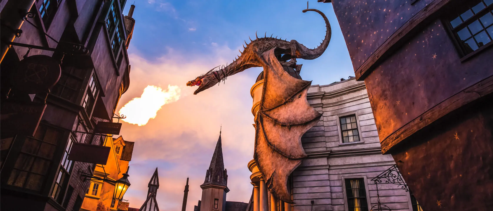
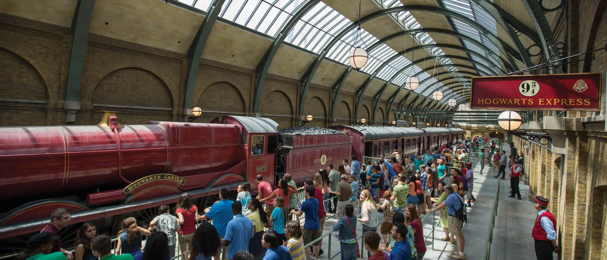

"Enter beneath a massive fire-breathing dragon and journey deep underground on this multi-dimensional thrill ride. As you navigate perilous subterranean vaults, you'll encounter Harry, Ron, and Hermione. But you'll have to evade the wrath of villains Voldemort™, Bellatrix, trolls and other creatures that stand between you and a safe return to Diagon Alley™."

"Travel between King's Cross Station in the London area of Universal Studios Florida and Hogsmeade™ Station in Universal Islands of Adventure. Each way is a different experience. From the thrill of walking through Platform 9 ¾™ to seeing characters and creatures featured in the films, this is not your everyday train ride. Additional restrictions apply."